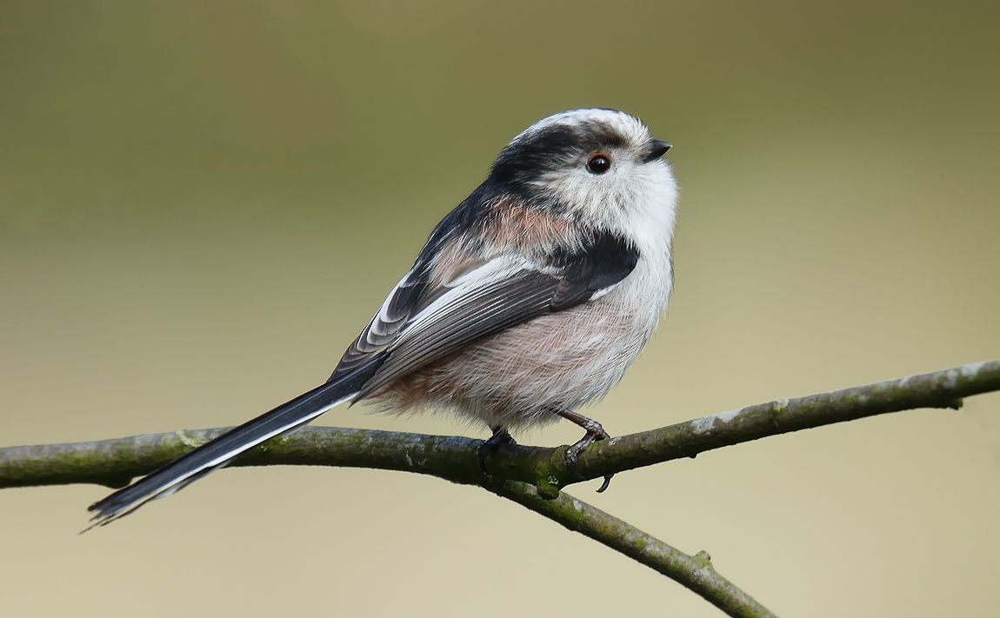

Small, cute and sociable
The long-tailed tit is easily recognisable with its distinctive colouring, a tail that
is longer than its body, and a bouncy flight. These cuties roam around together in family
flocks that stay together all year-round.
Gregarious and noisy residents, long-tailed tits are most usually noticed in small,
excitable flocks of about 20 birds.
Like most tits, they rove the woods and hedgerows, but are also seen on heaths and commons
with suitable bushes.
The shoulders and underparts are pinkish. The head has a white crown with black marks above
the eyes and into the nape. They have red eye rings and a very small black bill. The black
and white tail is very long, over half the length of the bird and the longest tail of any
British bird in proportion to its body. The legs are black-brown.
Long-tailed tits feed mostly on insects and their larvae, spiders, but also on berries. Though they are increasingly feeding from feeders containing fat like suet cakes or pellets. They'll often visit you in a big flock, arriving and leaving all together.
Woodland, Farmland, Heathland, Urban and suburban
Long-tailed tits are found across the UK except for the far north and west of Scotland. They can be seen in woodland, farmland hedgerows, scrubland, parkland and gardens. In winter they form flocks with other tit species.
Long Tailed Tits can be seen all year round.